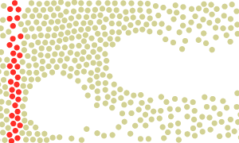

| Table of Contents | Generate trajectory lines | Up |
|---|---|---|
| Prev | Modifiers | Next |
| Table of Contents | Generate trajectory lines | Up |
|---|---|---|
| Prev | Modifiers | Next |
This modifier produces a set of continuous lines from the time-dependent particle positions. It can be used to visualize the trajectories of motion of particles.
You can choose between generating trajectory lines for all particles in the system or just a subset of the particles. In the latter case, you need to select the particles first for which you would like to visualize the trajectories. Keep in mind that generating and visualizing trajectory lines for datasets with a large number of particles and/or a large number of timesteps can be prohibitively expensive. Thus, it typically is a good idea to restrict the generation of trajectory lines to just a small group of particles which are of interest.
The button starts the line tracing process. OVITO will read in all simulation frames one after another and sample the particle positions to produce the trajectory lines. The generated lines will be stored by the modifier in memory, and they will not be updated unless you press the button again.
The following animation shows a system of Lennard-Jones particles flowing around two obstacles. The paths of motion of the red marker particles have been visualized using trajectory lines, which were generated by this modifier. The Show up to current time only option of the Trajectory lines visual element restricts the rendering of the trajectory lines to a dynamic time interval that ends at the current animation time. Thus, the lines appear to be traced by the moving particles.
|  |
Molecular dynamics codes that implement periodic boundary conditions (PBC) typically fold particles back into the box when they cross a periodic boundary of the simulation box. Thus, the time-dependent particle coordinates represent discontinuous trajectory paths. The Unwrap trajectories option of the modifier allows to reconstruct continuous trajectory lines from these "wrapped" (i.e. discontinuous) particle coordinates.
When the Unwrap trajectories option is active, the modifier uses the minimum image convention to detect crossings of periodic box boundaries and "unwraps" the trajectory lines to make them continuous. The option is active by default, but you can turn it off in case you are working with MD trajectory data that is already in an "unwrapped" form.
Furthermore, note that the Trajectory lines visual element (see lower panel) provides the Wrapped trajectory lines display option. This option has a reverse effect: The continuous trajectory lines computed by the modifier are folded back into the simulation box during rendering. A trajectory will then appear as a set of separate line segments when it crosses a periodic simulation box boundary.
Note that unwrapping or unfolding trajectory lines correctly is generally possible only if the simulation box does not change, i.e., when the periodicity length remains constant throughout a simulation. If this is not the case, unwrapped trajectory lines will typically show artifacts, in particular if they are folded back into the current simulation cell later on during rendering, because it is impossible to produce a representation that is consistent with both the static trajectory lines and the dynamically changing simulation box.